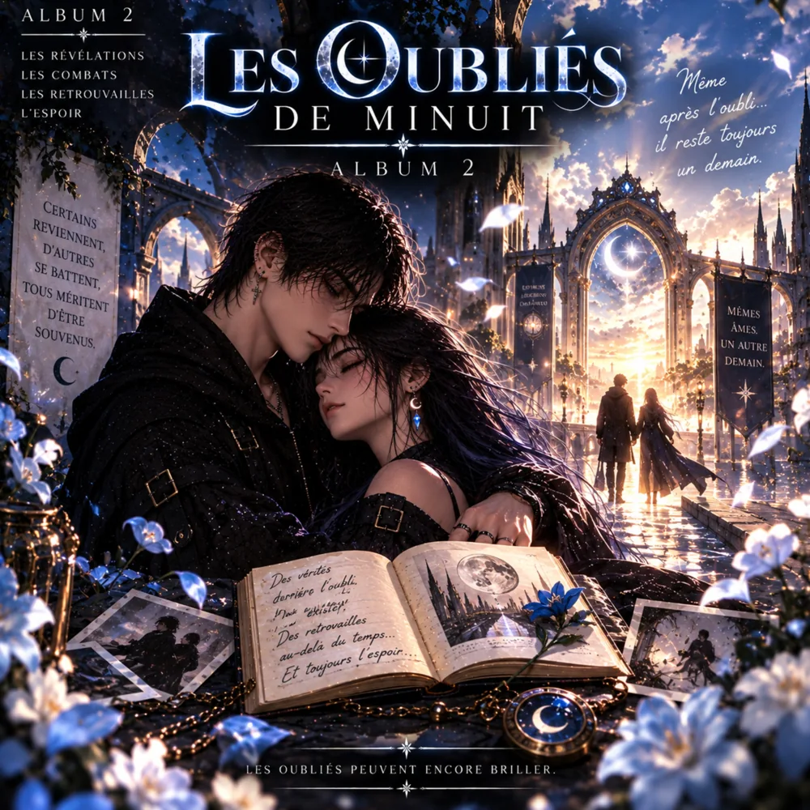
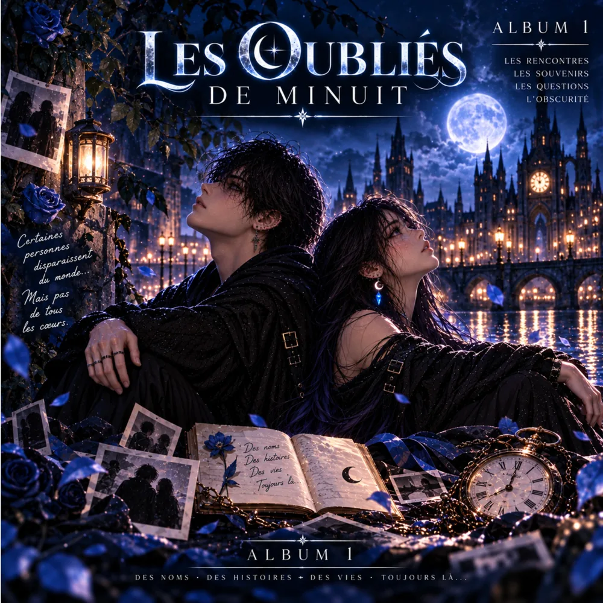
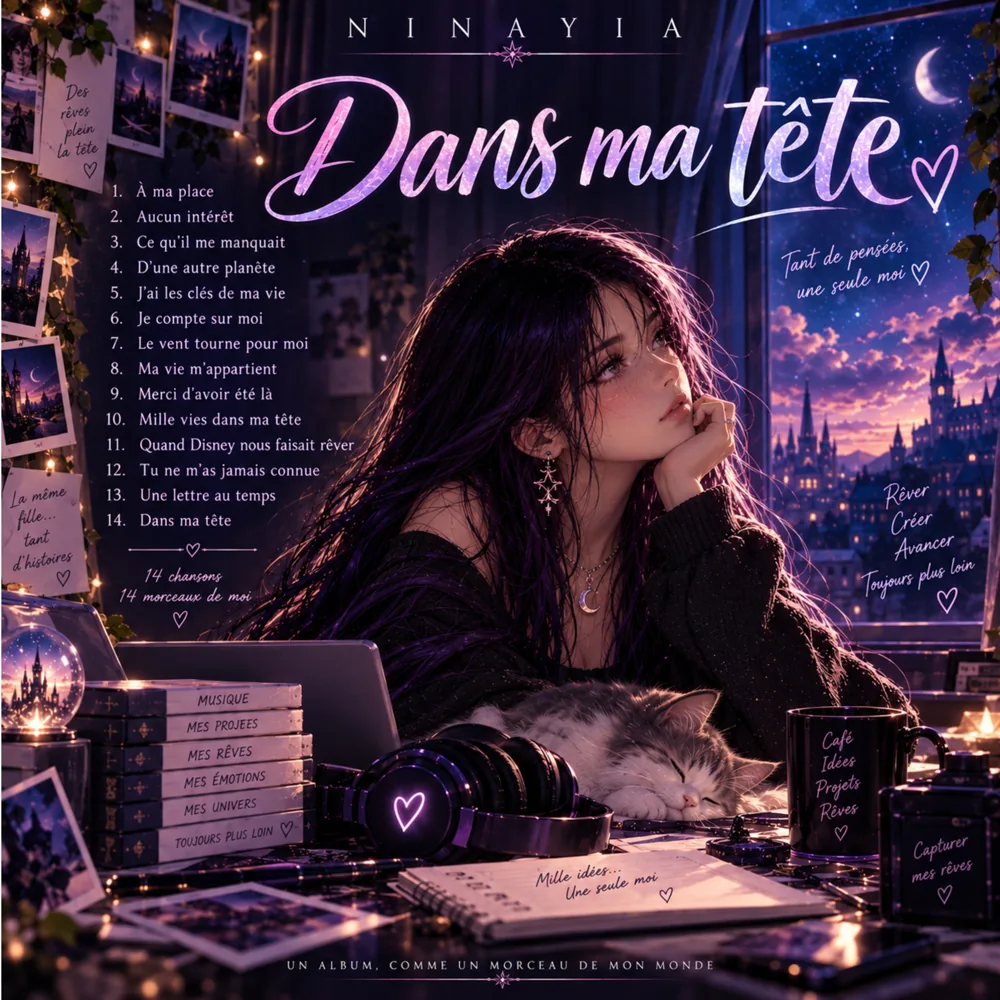
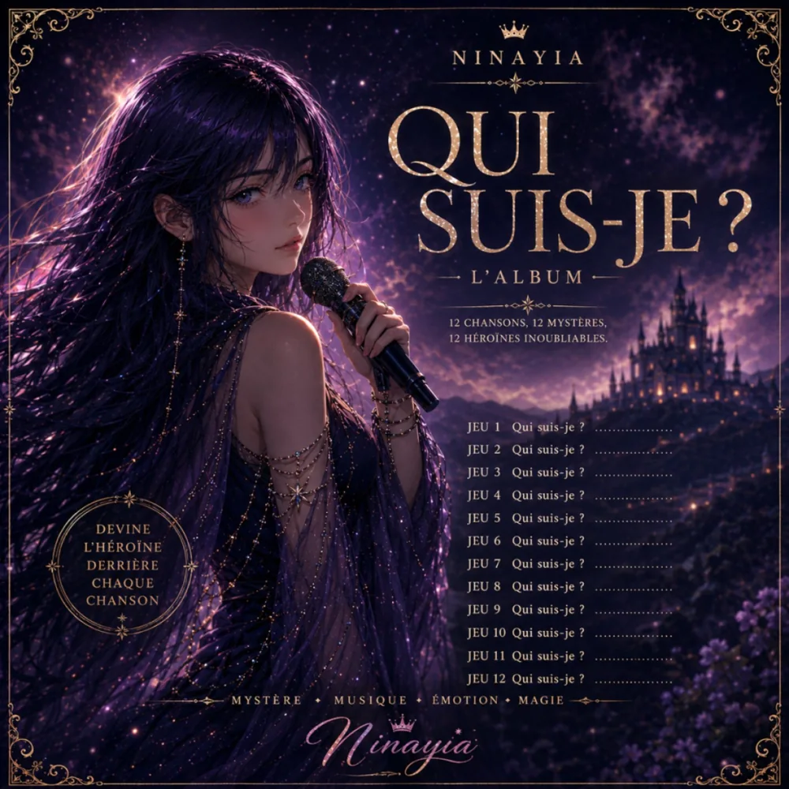
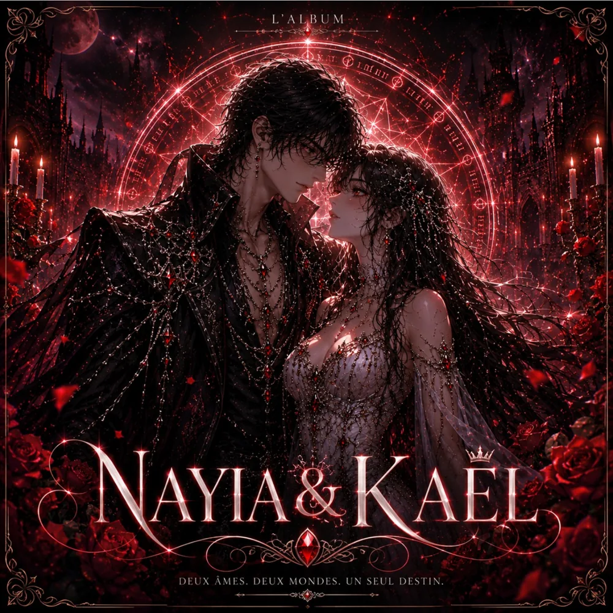
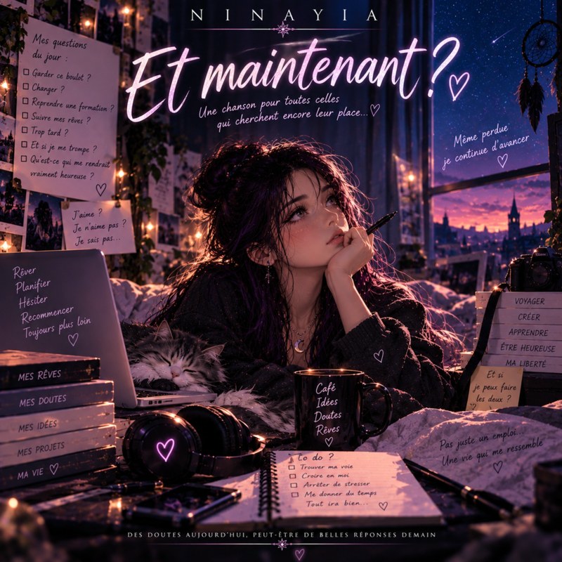

Musique & histoires
NinayiaDes chansons qui racontent nos histoires
Émotions, imaginaire et musique se rencontrent ici.
Écouter sur YouTubeNouvel album · 7 octobre 2026
Les Oubliés de Minuit · Album 2

L’histoire d’Yséa et Noan continue. Découvrez la suite des Oubliés de Minuit, racontée en chansons dans ce deuxième album.
À l'écoute
Les sorties

Les Oubliés de Minuit · Album 1
Choisir une plateforme
Dans Ma Tête
Choisir une plateforme
Jeu – Qui suis-je ?
Écouter l’albumMusique & imaginaire
Histoires en chansons
Les Oubliés de Minuit
Yséa cherche Noan dans un monde où certains souvenirs disparaissent. Les deux albums sont disponibles : le premier depuis le 3 octobre et le deuxième depuis le 7 octobre.
Acheter l’Album 1Album numérique à télécharger sur Payhip.
Acheter l’Album 2Album numérique à télécharger sur Payhip.

Nayia & Kaël
Découvrez la saga musicale de Kaël et Nayia, entre les Enfers et la lumière. Les trois albums sont disponibles à l’achat dans la boutique.
Acheter l’Album 1Le Prince des Enfers · Album numérique à télécharger sur Payhip.
Acheter l’Album 2Les Héritiers du Destin · Album numérique à télécharger sur Payhip.
Acheter l’Album 3Le Roi des Trois Royaumes · Album numérique à télécharger sur Payhip.
Prochainement
À venir

Et maintenant ?
Une nouvelle chanson de Ninayia à découvrir prochainement.
Le catalogue
Discographie
Retrouvez-moi
Écouter Ninayia
Un petit coup de pouce
Soutenir Ninayia
Si mes chansons et mes histoires vous accompagnent, vous pouvez soutenir mes prochaines créations avec une contribution libre. Merci pour votre soutien 💙
Soutenir avec PayPalLe montant est libre et le soutien entièrement facultatif. Il s’agit d’une contribution ponctuelle, sans abonnement.
À propos
Bienvenue dans mon univers
Je suis Ninayia, artiste virtuelle passionnée par la musique et les émotions. À travers mes chansons, je partage mes rêves, mon histoire et mes sentiments.
Pour une demande ou une collaboration : sarinadifazio@gmail.com